HIST 101 · U.S. History to 1877
Uncle Tom’s Cabin
The Novel That Answered a Law
Chapter 13 · Lecture 4 · Study Buddy Edition
Background: a collage of six period images: a daguerreotype of Harriet Beecher Stowe, the cloth cover of the 1852 first edition, an 1886 theater poster of Uncle Tom, the 1837 antislavery woodcut “Am I Not a Man and a Brother?”, Eliza crossing the ice from the 1853 illustrated edition, and a hand-colored lithograph of Tom’s first meeting with Eva.
Collage: Stowe by Southworth & Hawes, c. 1850 (Metropolitan Museum of Art); first-edition cover, 1852 (Wikisource); “Uncle Tom’s Cabin” poster, A. S. Seer, 1886 (Library of Congress); “Am I Not a Man and a Brother?”, 1837 (Library of Congress); Eliza on the ice, Billings, 1853 illustrated edition (Internet Archive); Tom and Eva, T. W. Strong lithograph, 1850s (Library of Congress). All public domain, via Wikimedia Commons.
Harriet Beecher Stowe
- Born in 1811 into a famous family of preachers
- 1832–1850: lived in Cincinnati and watched slavery across the Ohio River in Kentucky
- 1849: her baby son Charley died of cholera
- 1850: moved to Maine just as the Fugitive Slave Act passed

One Year Later: A Novel
Harriet Beecher Stowe wrote in response to the Fugitive Slave Act.
Uncle Tom’s Cabin was serialized in the National Era (June 1851–April 1852), then appeared as a book on March 20, 1852.
Roughly 300,000 U.S. copies in the first year; about 1.5 million in Britain.


The Story, Part 1: Eliza and Tom
- A Kentucky farmer in debt sold Tom and little Harry to a slave trader
- Harry’s mother, Eliza, ran with him across the icy Ohio River
- Tom stayed, was sold south, and saved young Eva St. Clare from drowning
- Eliza’s husband, George Harris, escaped to join her on the way to Canada


The Story, Part 2: Legree’s Plantation
- In New Orleans, Eva and her father died, and Tom was sold to Simon Legree, a brutal Louisiana cotton planter
- Legree had also bought two enslaved women, ; they escaped and hid
- Tom refused to tell where they were hiding, so Legree had him whipped
- Dying from the beating, Tom forgave the two men who whipped him (Sambo and Quimbo)

Uncle Tom in the Novel
- A strong, middle-aged, deeply Christian man who reads his Bible
- Trusted on the Shelby farm, yet sold away from his wife and children to pay debts
- Refuses Legree’s order to whip other enslaved people
- Refuses to betray and dies rather than give in: passive resistance and martyrdom

A National Sin
Stowe ended with “Concluding Remarks,” speaking directly to her readers:
- Her incidents were “to a very great extent, authentic”
- The North shared the guilt: it profited from slavery and enforced the 1850 law
- Every reader could “see to it that they feel right”
“Both North and South have been guilty before God; and the Christian church has a heavy account to answer.”Harriet Beecher Stowe, “Concluding Remarks,” Uncle Tom’s Cabin (1852)

Video: The Novel That Changed America
Sentimental Fiction
Sentimental fiction: stories written to make readers feel deeply, and to turn those feelings into moral action.
- Homes, mothers, children, and deathbeds
- A narrator who speaks straight to the reader
- Tears as a sign of a good heart
- Stowe’s goal: readers who “feel right”
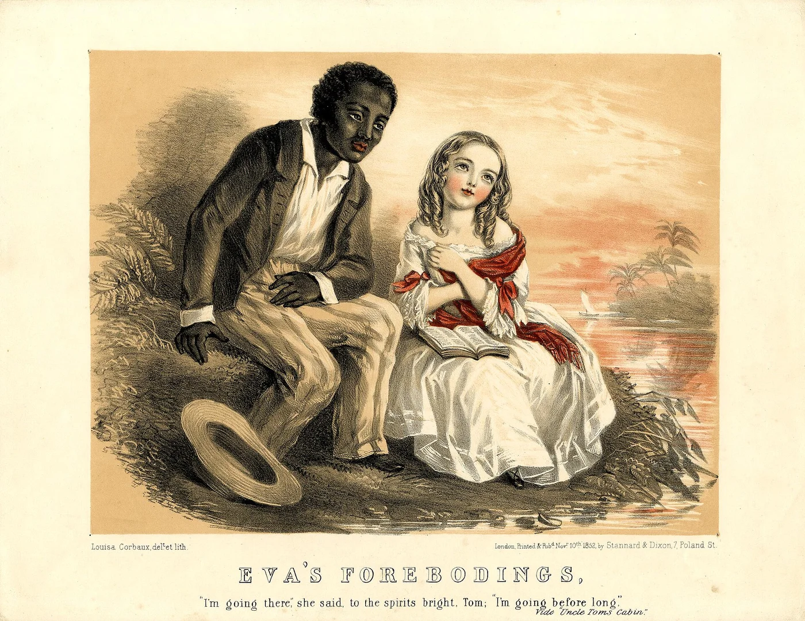
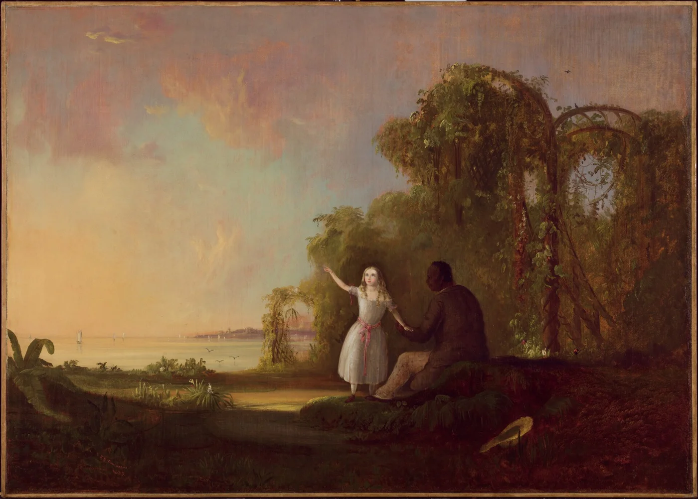
Why the Book Mattered
- Made the human cost of slavery emotionally concrete
- Converted many moderate Northerners
- Suppressed across the South; inspired “Anti-Tom” novels
- Stage versions circulated for decades
The perception that the novel shifted opinion was widespread, and the story soon spread far beyond the book.

“Uncle Tom Mania”
- Songs and sheet music for parlor pianos, from 1852 on
- Prints and illustrations of favorite scenes for the wall
- Staffordshire porcelain figures, plates, and other merchandise
- Card and board games, and stage plays called “Tom shows”


The Southern Response
- White Southern reviewers called it a slander: false, ignorant, and dangerous
- 1857: Samuel Green, a free Black Maryland minister, got ten years, partly for owning a copy
- Writers answered with “Anti-Tom” novels like Aunt Phillis’s Cabin (1852)
- 1853: Stowe answered with A Key to Uncle Tom’s Cabin, laying out the laws, ads, and testimony behind her story

In-Class Assignment
Primary Source Packet
- In class, open the packet: Uncle Tom: In Stowe’s Own Words
- Read the three scenes in order: Chapter 5 (loyalty), Chapter 33 (refusing to whip a sick woman), Chapter 40 (refusing to betray Cassy and Emmeline)
- Try each Reading Check, then use the Show Answers button to check yourself
- Type your answers to the four Thought Questions in the packet; cite the text like this: (Ch. 5, par. 7)
- Click Export Answers (.txt) and upload the .txt file to Canvas
Uncle Tom’s Cabin · Lecture 4
Part Two: From Hero to Insult
How Tom’s name changed meaning, 1852 to today
Part One followed the novel. Part Two follows its hero off the page, through stage plays, minstrel shows, souvenirs, and films, until Black activists and writers turned his name into an insult. It ends with a multiple-choice quiz you can export.
The first Tom plays · Tom on film · A new insult · Multiple-Choice Quiz · What to Turn In
HIST 101 · Chapter 13 · Lecture 4 · Part Two
Uncle Tom
From Hero to Insult
How a character’s name changed meaning, 1852 to today

Content note: Part Two shows racist images from the 1800s and 1900s and discusses an insult. We look at them to understand how they worked.
The First Tom Plays (1852–1853)
- U.S. law did not let Stowe control stage versions, and she was paid nothing for them
- George L. Aiken’s version opened in Troy, New York, in 1852, then ran for months in New York City
- H. J. Conway’s version, staged by P. T. Barnum in 1853, softened the antislavery message
- White actors usually played Tom in blackface makeup

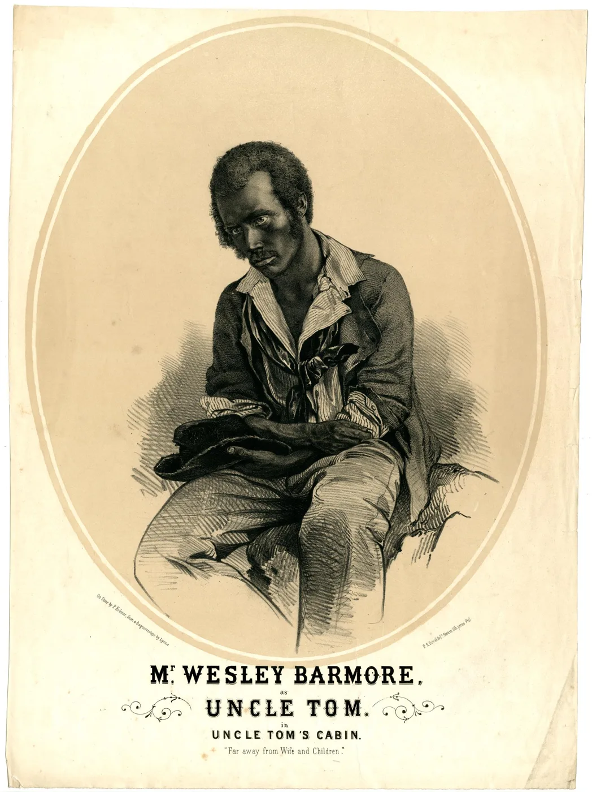
Minstrel Burlesques
- Blackface minstrel shows, white men in burnt-cork makeup mocking Black people, were the most popular entertainment of the day
- Within a year, minstrel troupes staged comic “Uncle Tom” acts
- Some turned the story upside down: happy slaves, kind masters, no tragedy
- Later Tom shows borrowed minstrel songs, dances, and jokes
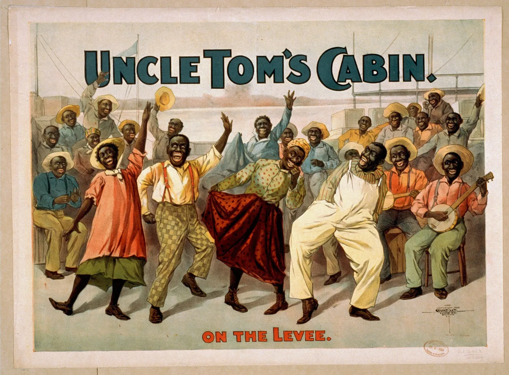
Tom Grows Old
- In the novel Tom was strong and middle-aged
- On stage and in posters he became white-haired and stooped, leaning on a cane or a hoe
- Old age made him look gentle and harmless rather than strong
- His refusals to obey Legree faded; his patience and loyalty took center stage


Tom Shows on the Road
- After the Civil War, touring “Tom shows” crossed the country by rail
- By the 1890s, hundreds of companies were on the road
- “Mammoth” shows added two Topsys, bloodhounds, brass bands, and street parades
- Tom shows kept touring well into the twentieth century
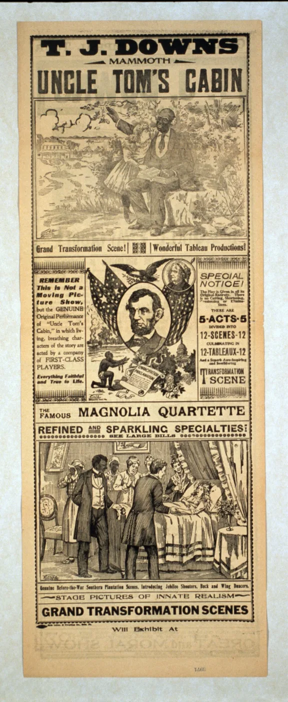
Tom on Film
- 1903: Edwin S. Porter’s Uncle Tom’s Cabin for the Edison company, one of the first long American films
- Often called the most-filmed story of the silent era, with about nine versions from 1903 to 1927
- 1914: Sam Lucas became one of the first Black actors to play Tom on film; most earlier Toms were white men in blackface
- 1927: Universal’s big-budget version starred James B. Lowe

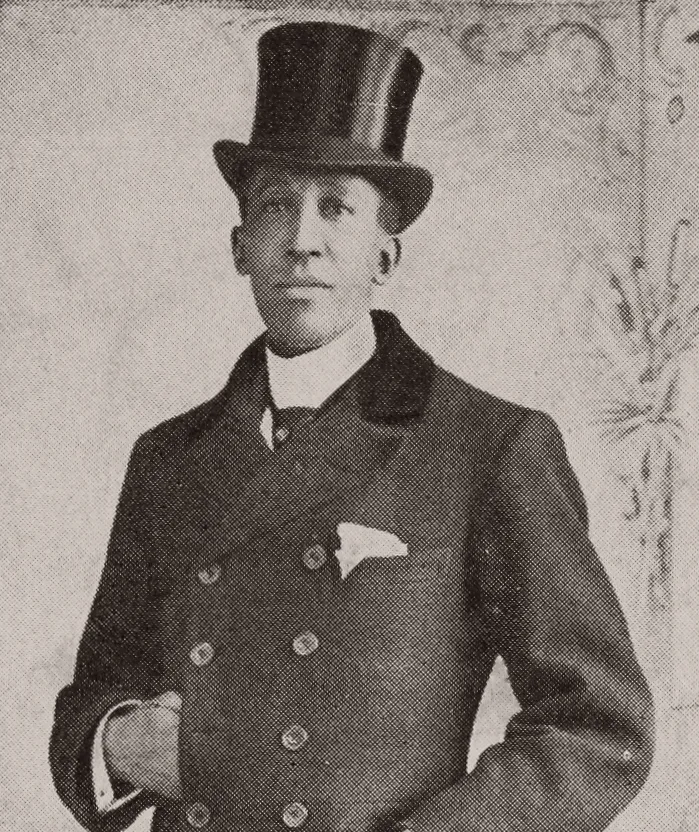

Selling Uncle Tom
- From 1852, Tom appeared on plates, figurines, handkerchiefs, and games
- After the war, toys and trade cards turned Black people into grinning caricatures
- The 1880s “Uncle Tom” bank made a Black face into a coin slot
- Mass-produced images taught millions what “Uncle Tom” looked like, without the novel’s story
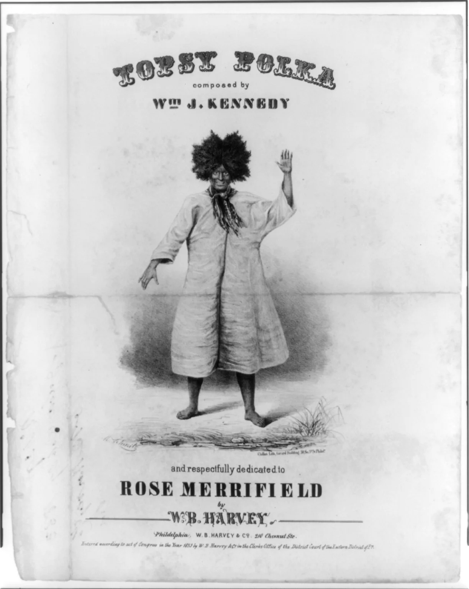
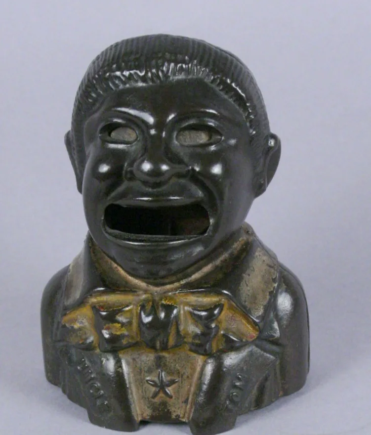
The “Faithful Old Servant”
- After 1865, white Southerners’ “Lost Cause” story claimed slavery had been kind and enslaved people loyal
- Stories such as Thomas Nelson Page’s In Ole Virginia (1887) featured devoted old “uncles” and “mammies”
- In 1895, a monument to “faithful slaves” went up in Fort Mill, South Carolina, and ad mascots such as Aunt Jemima sold the same picture
- The aged, gentle stage Tom fit this image perfectly

A New Insult (1910s–1920s)
- Black activists and writers turned “Uncle Tom” into an epithet
- It came to mean a Black leader who pleased white people at the expense of other Black people
- Marcus Garvey’s Universal Negro Improvement Association (UNIA) used it against rivals
- 1923: Garvey’s paper, the Negro World, denounced eight critics as “Uncle Tom” Negroes
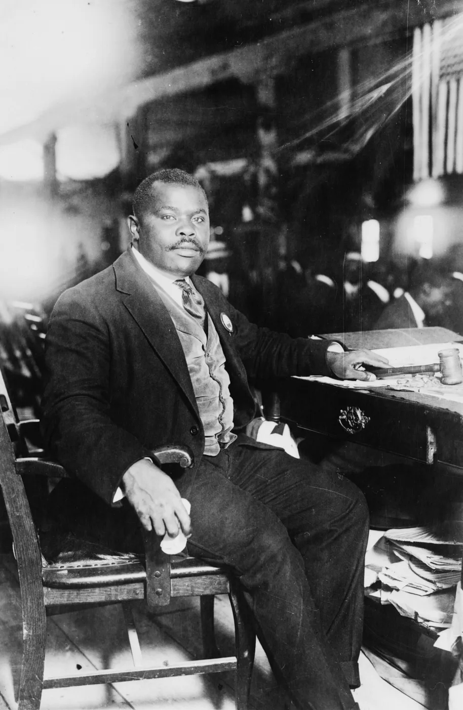
Writers Break with Tom
- 1938: Richard Wright titled his stories of Black Southerners who fight back Uncle Tom’s Children
- His epigraph: the old insult “He’s an Uncle Tom!” had given way to a new one: “Uncle Tom is dead!”
- 1949: James Baldwin’s essay “Everybody’s Protest Novel” attacked Stowe’s book itself
- Baldwin argued that Stowe had made Tom a symbol, not a full human being

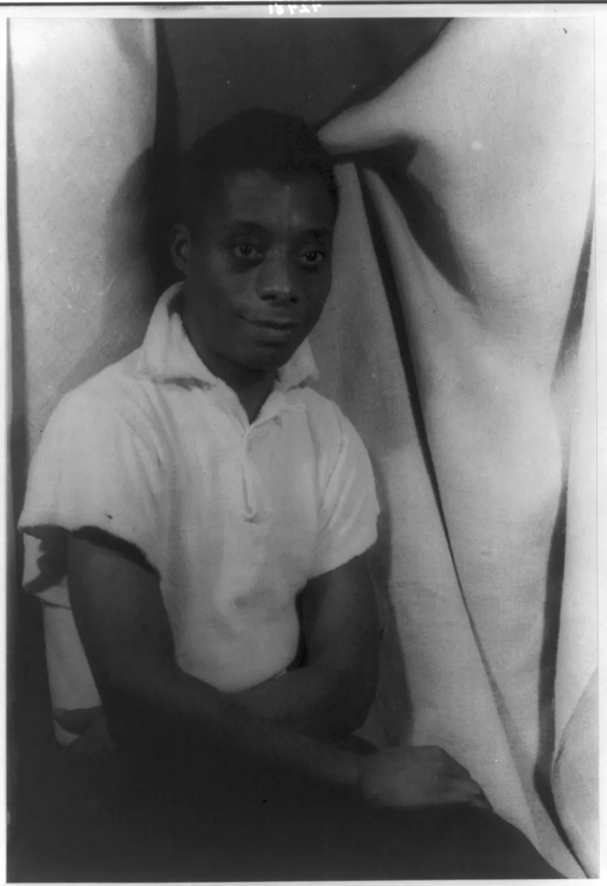
Civil Rights and Black Power
- 1963: Malcolm X attacked “twentieth-century Uncle Toms,” Black leaders who kept other Black people “in check”
- He linked them to the “house Negro” of slavery, though Stowe’s Tom refused to police others
- 1965: Muhammad Ali called Floyd Patterson an “Uncle Tom” before their title fight
- 1971: Ali used it on Joe Frazier, who had supported him; Frazier resented it for decades

Uncle Tom Today
- Still hurled as a political insult at Black public figures, often at Black conservatives
- Most people who use it have never read the novel
- Scholars such as Adena Spingarn (2018) trace how the name changed meaning
- Some readers now stress that Stowe’s Tom resisted: he would not whip others or betray , even unto death
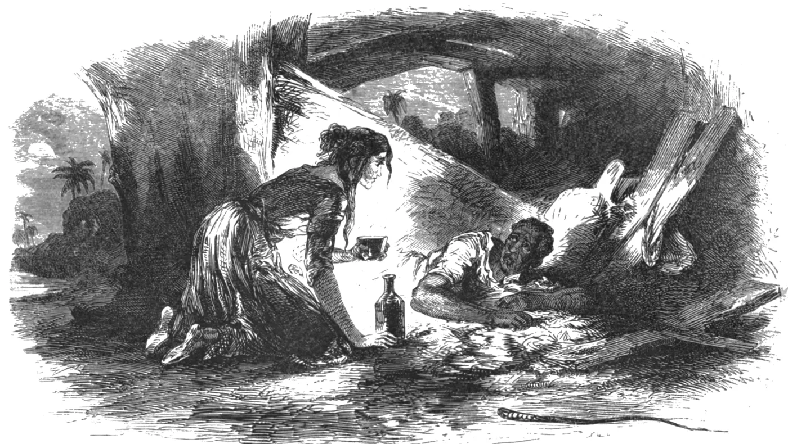
Who Decides?
Who decides what a character means: the author who wrote him, or the culture that retells him?
- 1852: Stowe wrote a Christian martyr who refused to betray others
- 1850s–1920s: stage, toys, ads, and Lost Cause writers made a contented old servant
- 1910s–1970s: Black activists and writers turned that servant into an insult
- Today: readers are arguing about Tom again
Part Two · Turn In
⏸ Multiple-Choice Quiz
Click one answer per question; your first click counts. Then export your answers and upload the .txt file to Canvas.
1. In the novel, what did Tom refuse to do when Simon Legree ordered him to?
2. Whose stage version of Uncle Tom’s Cabin opened in Troy, New York, in 1852, then ran for months in New York City?
3. How did many blackface minstrel troupes change Stowe’s story?
4. How did stage productions and posters change Tom?
5. What did “mammoth” Tom shows add that was not in the novel?
6. What did the “Lost Cause” story claim about slavery?
7. Whose movement, the Universal Negro Improvement Association (UNIA), used “Uncle Tom” as an insult against rival Black leaders?
8. In 1963 Malcolm X attacked “twentieth-century Uncle Toms” who kept other Black people “in check.” Why is that use of Tom’s name ironic?
Lecture 4 · Assignments
What to Turn In
- Required: the Part Two Multiple-Choice Quiz. Click Export Answers (.txt) and upload the .txt file to Canvas.
- Required: the Primary Source Packet, done in class. Click Export Answers (.txt) in the packet and upload the .txt file to Canvas.
Optional: the Independent Study section that follows is enrichment. Nothing to turn in.
Pierian Spring
Independent Study
Go deeper on your own
Optional enrichment, with nothing to turn in: four stories behind the novel, from the Anti-Tom novels to Stowe’s own book of evidence, A Key to Uncle Tom’s Cabin.
“A little learning is a dang’rous thing;
Drink deep, or taste not the Pierian spring.”Alexander Pope, An Essay on Criticism (1711)
Anti-Tom novels · The Lincoln anecdote · The vision in church · A Key to Uncle Tom’s Cabin · Sources
Independent Study · The book war
Southern Literary Response
Pro-slavery writers produced some 20–30 “Anti-Tom” novels. Stowe answered with A Key to Uncle Tom’s Cabin (1853), a documentary defense.
- Kind masters, contented enslaved people, happy plantation families
- Cruel Northern factories and “wage slaves”
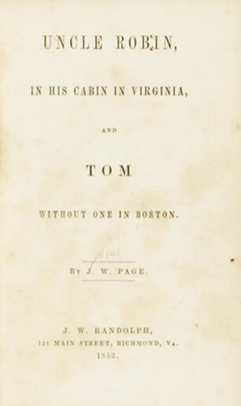
Independent Study · Weighing the evidence
The Lincoln Anecdote
The story that Lincoln greeted Stowe as “the little woman who made this great war” first appeared in print in 1896, 34 years after their December 1862 meeting, and rests on family tradition. No contemporary record confirms the words.
Treat it as a legend: the meeting probably happened; the line is unconfirmed.
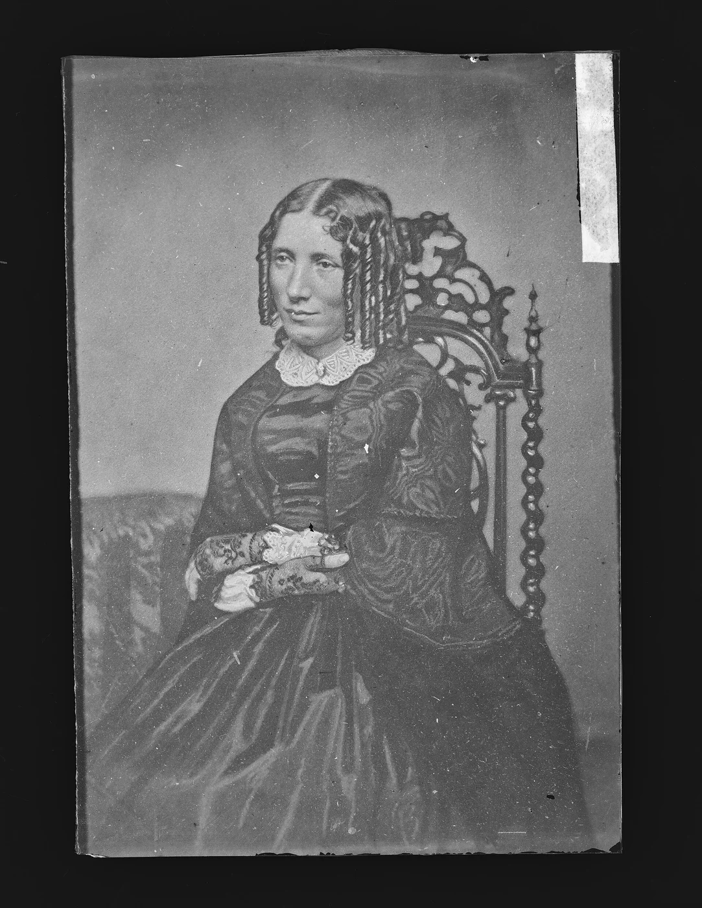
Independent Study · The writer’s story
The Vision in Church
- February 1851: a communion service in the college church at Brunswick, Maine
- Stowe said the death of Uncle Tom suddenly passed before her mind
- She went home, wrote that scene first, and read it to her children
- She later said, “The Lord himself wrote it”
This is Stowe’s own later account, told by her son in 1889. It shows how she understood the book, not exactly what happened that Sunday.
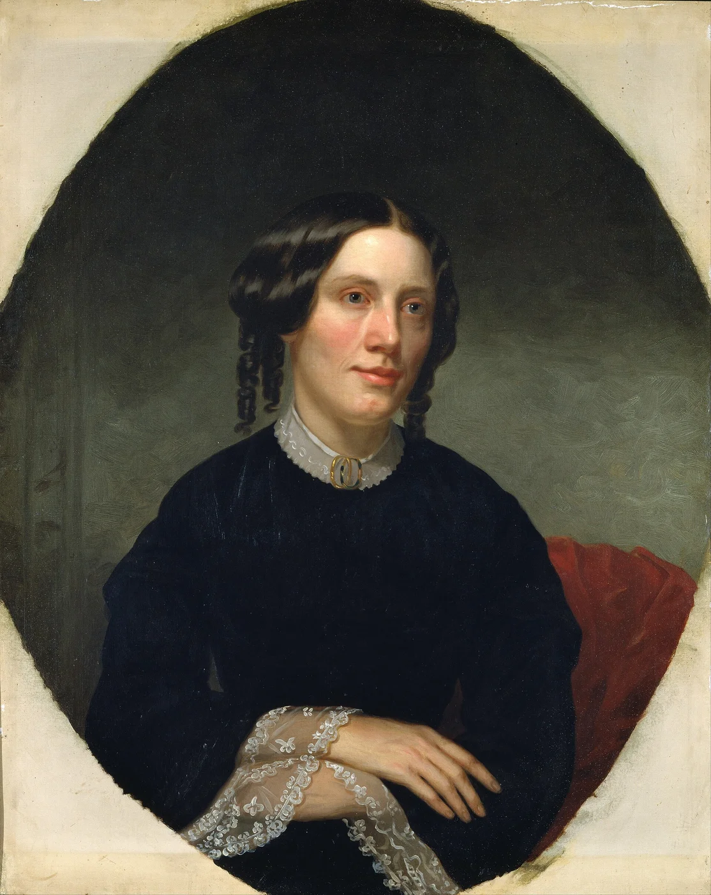
Independent Study
A Key to Uncle Tom’s Cabin
Stowe’s answer to her critics, 1853
- Southern critics said the novel was false: masters were kind and families rarely split
- Stowe answered with a book of evidence, not another story
- Spring 1853: published in Boston by John P. Jewett & Co., the novel’s publisher
Stowe’s sources · A mosaic of facts · A letter from Louisiana · Method and limits
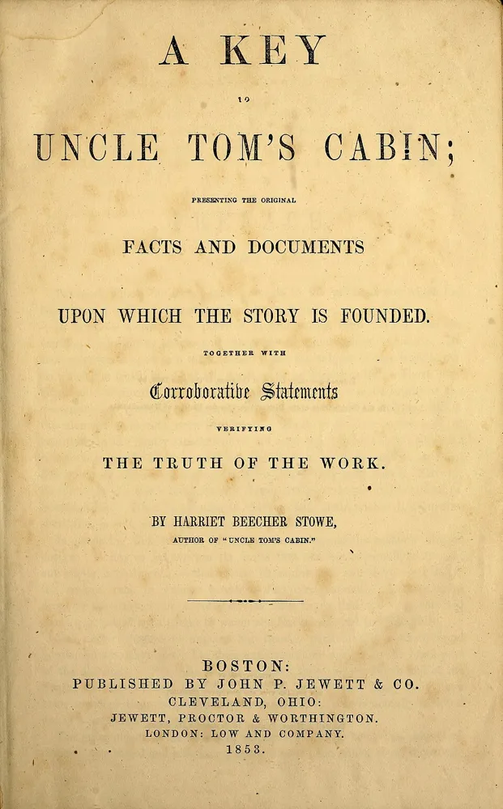
Independent Study · A Key to Uncle Tom’s Cabin
Stowe’s Sources
She built her story from real testimony:
- Weld and the Grimké sisters, American Slavery As It Is (1839)
- Josiah Henson’s life story (1849)
- Ohio River stories, like a mother who crossed the ice with her child


Independent Study · A Key to Uncle Tom’s Cabin
A Mosaic of Facts
- Part I: the novel’s characters one by one, from the trader Haley to Uncle Tom and Legree, each matched with real cases
- Parts II–IV: slave laws and court cases, the slave trade and broken families, and the churches
- Runaway ads, letters, and testimony from enslaved and formerly enslaved people
“His is a mosaic of gems,—this is a mosaic of facts.”Harriet Beecher Stowe, A Key to Uncle Tom’s Cabin, Part I, ch. 1 (1853)
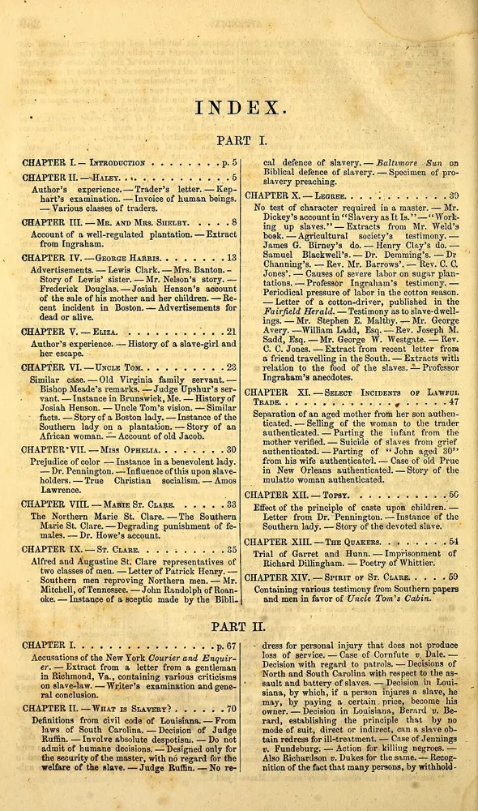
Independent Study · A Key to Uncle Tom’s Cabin
A Letter from Louisiana
- Thomas Ducket, enslaved in Maryland, was sold south after his wife tried to escape on the schooner Pearl in 1848
- February 18, 1852: from a Louisiana plantation, he wrote to a Mr. Bigelow in Washington, begging for news of his family
- Stowe printed a facsimile: a copy of his own handwriting
“My wife and children are not out of my mind day nor night.”Thomas Ducket to Mr. Bigelow, February 18, 1852, as printed in Stowe, A Key to Uncle Tom’s Cabin (1853)
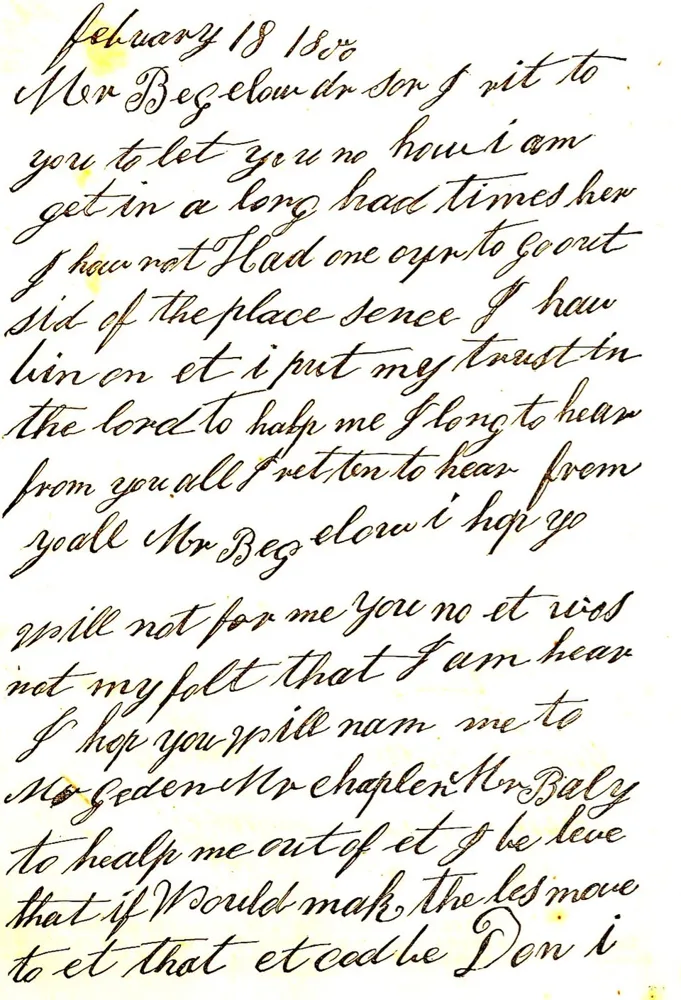
Independent Study · A Key to Uncle Tom’s Cabin
Method and Limits
- While writing, she kept two law books at hand: the Louisiana Code Noir and George Stroud’s 1827 sketch of the slave laws
- Afterward, with lawyers’ help, she looked up court cases, like Souther v. Commonwealth (Virginia, 1851)
- Many works the Key cites she read only after the novel came out
- A best seller, yet Southern reviewers said she had picked only the worst cases
The Key shows that cruelties like those in the novel really happened. It does not show that every scene had a source in hand when she wrote it.
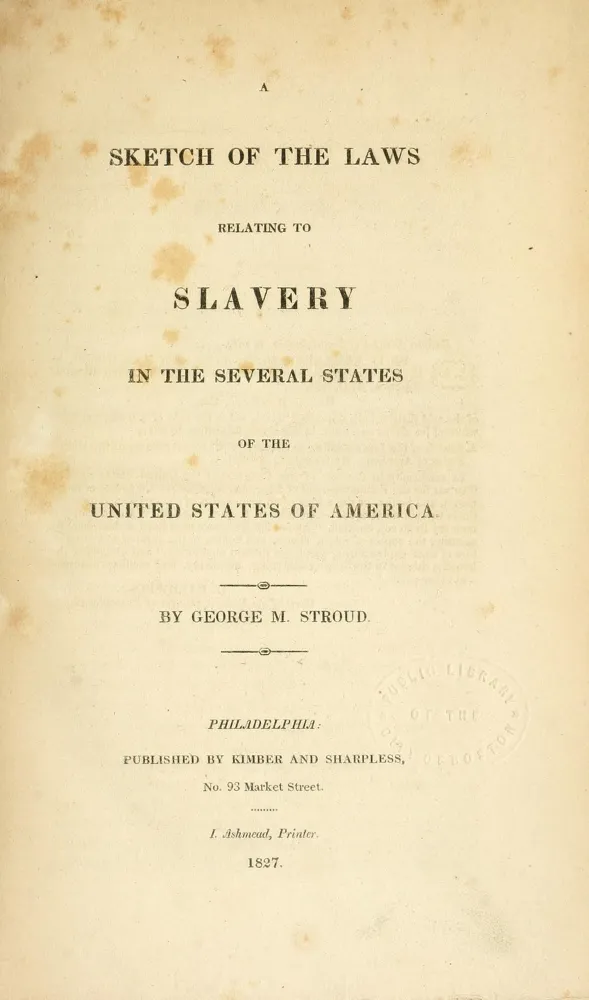
Sources
Primary sources
- Fugitive Slave Act, Sept. 18, 1850, 9 Stat. 462 (Avalon Project, Yale Law School).
- Harriet Beecher Stowe, Uncle Tom’s Cabin (National Era, 1851–52; Boston: John P. Jewett, 1852), including “Concluding Remarks”; A Key to Uncle Tom’s Cabin; Presenting the Original Facts and Documents upon Which the Story Is Founded (Boston: John P. Jewett & Co., 1853; Project Gutenberg #54812), including Thomas Ducket’s letter of Feb. 18, 1852, the runaway notices from Weld, and Souther v. Commonwealth, 7 Grattan 673 (Va. 1851).
- George M. Stroud, A Sketch of the Laws Relating to Slavery in the Several States of the United States of America (Philadelphia: Kimber and Sharpless, 1827).
- Theodore D. Weld et al., American Slavery As It Is (1839); Josiah Henson, The Life of Josiah Henson (1849).
- Mary H. Eastman, Aunt Phillis’s Cabin (1852); Caroline Lee Hentz, The Planter’s Northern Bride (1854).
- Charles E. Stowe, Life of Harriet Beecher Stowe, Compiled from Her Letters and Journals (1889; Project Gutenberg #6702).
- Annie Fields, ed., Life and Letters of Harriet Beecher Stowe (1897); Josiah Henson, “Uncle Tom’s Story of His Life” (1876).
- Charles F. Briggs, “Uncle Tomitudes,” Putnam’s Monthly, January 1853.
- Annie Fields, “Days with Mrs. Stowe,” Atlantic Monthly, August 1896.
Scholarship and references
- David M. Potter, The Impending Crisis, 1848–1861 (1976).
- Joan D. Hedrick, Harriet Beecher Stowe: A Life (1994).
- Jane Tompkins, Sensational Designs (1985).
- Daniel R. Vollaro, “Lincoln, Stowe, and the ‘Little Woman/Great War’ Story,” Journal of the Abraham Lincoln Association 30, no. 1 (2009).
- Stephen Railton, ed., Uncle Tom’s Cabin & American Culture (University of Virginia), including the introduction to “The Key to Uncle Tom’s Cabin.”
- Zachary McLeod Hutchins, Christopher N. Phillips, and Edward Whitley, proposal for A Key to Uncle Tom’s Cabin, Collected Works of Harriet Beecher Stowe (2025).
- Library of Congress catalog record for A Key (copyright deposit, April 14, 1853); C. Percy Powell, ed., Lincoln Day by Day, vol. 3 (1960), on Lincoln’s 1862 borrowing of the Key.
- George Frederick Holmes, review of A Key to Uncle Tom’s Cabin, Southern Literary Messenger 19, no. 6 (June 1853).
- James Baldwin, “Everybody’s Protest Novel” (1949).
Images
- All images are period works in the public domain (Library of Congress, Harvard Schlesinger, Internet Archive, British Museum, Metropolitan Museum of Art, Smithsonian National Portrait Gallery, Detroit Institute of Arts) via Wikimedia Commons, plus the Concord Museum and the Rijksmuseum, plus the Boston Public Library copy of Stroud’s Sketch (Internet Archive), except the Little Eva sheet music (Boston Public Library, CC BY 2.0). The title collage was assembled from six public-domain images listed on the title slide. Each slide’s caption gives its source.
Sources: Part Two
Primary sources
- Harriet Beecher Stowe, Uncle Tom’s Cabin; or, Life Among the Lowly (Boston: John P. Jewett, 1852), illustrations by Hammatt Billings.
- George L. Aiken, Uncle Tom’s Cabin (play, 1852); H. J. Conway, Uncle Tom’s Cabin (play, 1852–53).
- Thomas Nelson Page, In Ole Virginia (1887).
- Marcus Garvey, “Eight ‘Uncle Tom’ Negroes,” Negro World, February 1923.
- Richard Wright, Uncle Tom’s Children (1938; expanded 1940).
- James Baldwin, “Everybody’s Protest Novel,” Zero and Partisan Review (1949); reprinted in Notes of a Native Son (1955).
- Malcolm X, “Message to the Grass Roots,” Detroit, November 10, 1963.
- Floyd Patterson, “In Defense of Cassius Clay,” Esquire (1966).
- Edwin S. Porter, Uncle Tom’s Cabin (Edison, 1903); Harry A. Pollard, Uncle Tom’s Cabin (Universal, 1927).
- Images: Library of Congress (posters, “Topsy Polka” sheet music, Harper’s Weekly, Garvey, Wright, Baldwin, Malcolm X, Ali), British Museum, Johns Hopkins Levy Sheet Music Collection, Missouri History Museum, Internet Archive, and UVA, via Wikimedia Commons (public domain).
Secondary sources
- Adena Spingarn, Uncle Tom: From Martyr to Traitor (Stanford University Press, 2018).
- Stephen Railton, ed., Uncle Tom’s Cabin & American Culture, University of Virginia (utc.iath.virginia.edu).
- Sarah Meer, Uncle Tom Mania: Slavery, Minstrelsy, and Transatlantic Culture in the 1850s (University of Georgia Press, 2005).
- Eric Lott, Love and Theft: Blackface Minstrelsy and the American Working Class (Oxford University Press, 1993).
- Patricia A. Turner, Ceramic Uncles & Celluloid Mammies: Black Images and Their Influence on Culture (Anchor, 1994).
- Jo-Ann Morgan, Uncle Tom’s Cabin as Visual Culture (University of Missouri Press, 2007).
- David W. Blight, Race and Reunion: The Civil War in American Memory (Harvard University Press, 2001).
- Henry Louis Gates Jr. and Hollis Robbins, eds., The Annotated Uncle Tom’s Cabin (Norton, 2007).
- David Remnick, King of the World: Muhammad Ali and the Rise of an American Hero (Random House, 1998).